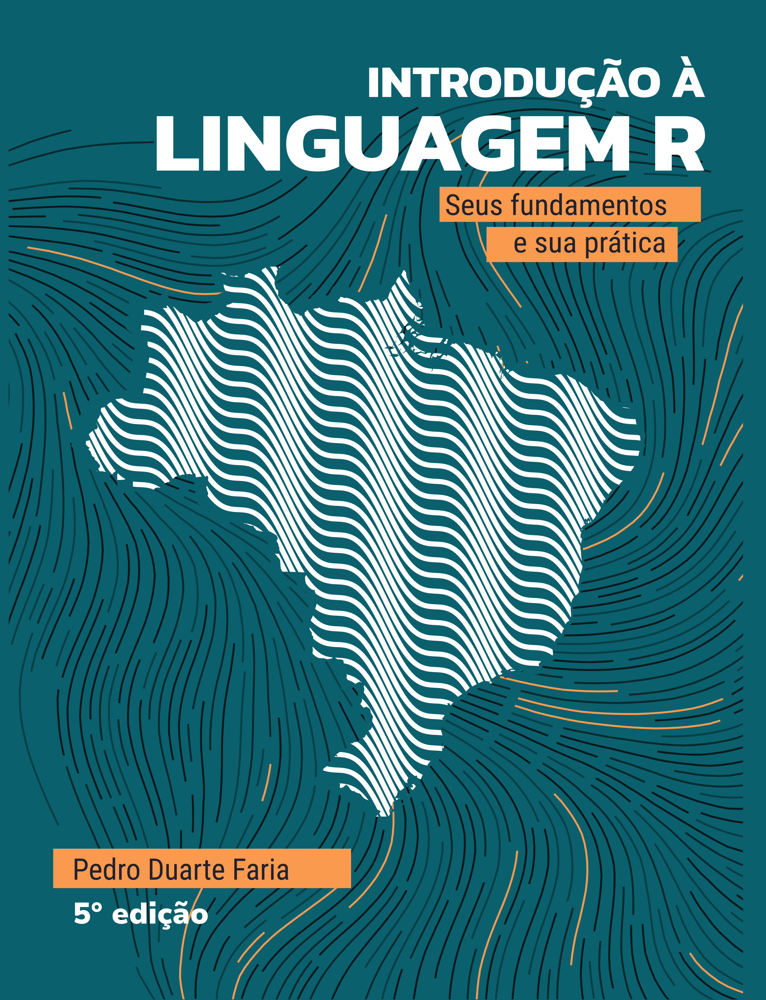

Introdução à Linguagem R
seus fundamentos e sua prática
Prefácio
Bem vindo!
 Você está no site do livro “Introdução à Linguagem R: seus fundamentos e sua prática” escrito por Pedro Duarte Faria. Esta obra, tem como objetivo, ensinar os fundamentos da Linguagem R e como eles se aplicam na prática de análises de dados. Alguns temas incluem: estruturas e tipos de dados; coerção e subsetting; importação de dados e operações sobre tabelas; dados relacionais e join’s; geração de gráficos; controles de fluxo, funções e loop’s; datas e fatores; dentre outros.
Através deste site, você pode ler o livro completo gratuitamente. Você também pode comprar uma versão física ou em Ebook deste livro na Amazon. Atualmente, o livro se encontra em sua 5° edição, e está licenciado segundo a Licença Creative Commons - Atribuição - NãoComercial 4.0 Internacional. Você pode visitar a página dessa licença.
A história deste livro
Este livro surgiu inicialmente, como um material de apoio aos pesquisadores e alunos do Curso Introdutório de R, que foi realizado durante o primeiro semestre de 2020, na Fundação João Pinheiro1(FJP-MG).
O projeto foi idealizado na época, por um conjunto de três pessoas. Dentre elas, estão os autores da primeira edição desta obra: Pedro Duarte Faria e João Pedro Figueira Amorim Parga. Portanto, esse material é resultado dessa experiência de ensino, onde buscamos compartilhar conhecimentos sobre essa linguagem com outras pessoas.
Eu (Pedro) como professor, aluno e economista, sou muito grato por ter compartilhado essas experiências, com meu querido colega João Pedro Figueira Amorim Parga, que me ajudou a montar a primeira edição deste livro. Após a primeira edição desta obra, o livro continuou sendo mantido e desenvolvido por Pedro Duarte. Desde então, o livro já passou por várias revisões, buscando sempre refletir os padrões mais modernos da Linguagem R. O livro já foi inclusive reescrito do zero, passando por uma reformulação completa durante o ano de 2021.
Pedro Duarte Faria
22/05/2024
Belo Horizonte - MG
Brasil
Sobre o autor
Pedro Duarte Faria
Pedro Duarte Faria é economista formado pela Universidade Federal de Ouro Preto - UFOP. Atualmente é Data Platform Engineer em Blip, e Associate Developer for Apache Spark 3.0 certificado pela empresa Databricks.
O autor conta com mais de 5 anos de experiência no mercado de análise de dados, construindo pipelines, relatórios e análises para instituições de pesquisa e algumas das maiores empresas do setor financeiro brasileiro como o Banco BMG, Sodexo e Banco Pan, além de lidar com algumas bases de dados que passam do bilhão de linhas.
Além dessas experiências, Pedro já ministrou vários cursos sobre a linguagem R, dentro de centros de pós-graduação (como o PPEA-UFOP2) além de organizações federais e estaduais (como a FJP-MG3). Como pesquisador, tem experiência em especial na área de Economia da Ciência, Tecnologia e Inovação.
Lattes: http://lattes.cnpq.br/0308632529554550
Site pessoal: https://pedro-faria.netlify.app/
Twitter: @PedroPark9
Mastodon: @pedropark99@fosstodon.org
Qual o objetivo deste livro?
As origens da linguagem R, remetem a um dos mais importantes laboratórios de pesquisa do mundo, a Bell Labs, localizada nos EUA. Por sua origem, a enorme maioria dos materiais de referência a respeito da linguagem, estão em inglês, incluindo as principais fontes de ajuda da linguagem, como o StackOverflow4, ou as páginas e manuais internos do CRAN R5.
Entretanto, a comunidade de R no Brasil, tem se expandido constantemente nos últimos anos. Brasileiros tem desenvolvido importantes pacotes para a linguagem, que trazem grande apoio à produção científica do país. Apenas para citar alguns desses excelentes trabalhos, estão (BRAGA; ASSUNCAO; HIDALGO, 2020; MCDONNELL; OLIVEIRA; GIANNOTTI, 2020; PEREIRA et al., 2020; PETRUZALEK, 2016; SIQUEIRA, 2020).
Como resultado, bons materiais em português, de referência e apoio à linguagem tem surgido. Exemplos são: os materiais curtos montados pelo Curso R6; os trabalhos realizados pelos capítulos brasileiros do grupo R-Ladies7, como os posts do capítulo de Belo Horizonte8, e os encontros desenvolvidos pelo capítulo de São Paulo9; além de alguns materias produzidos pelo Departamento de Estatística da UFPR, como um site de apoio ao seu curso10, ou este produzido por um dos professores do departamento, o Dr. Walmes Marques Zeviani11.
Porém, mesmo com esse avanço, grande parte desses conteúdos em português geralmente caem em algum desses dois problemas: 1) carecem de profundidade, ou de detalhamento sobre o que está “ocorrendo nos bastidores”. Em outras palavras, esses materiais são muito abstratos, pois tentam abordar muita coisa em um espaço muito curto, sem dar o devido tempo a cada um dos componentes por trás da linguagem; 2) ou são especializados demais. Por exemplo, materiais que ensinam como estimar modelos específicos (ex: regressão linear sobre dados em painel), ou a trabalhar com bases de dados específicas (ex: PNAD contínua). Em outras palavras, esses materiais concedem em geral, uma visão muito restrita sobre a linguagem, e que é de difícil transposição para outros cenários e necessidades práticas.
Esses problemas emergem do próprio objetivo que esses materiais buscam cumprir. Como exemplo, os materiais escritos pelo Curso-R carregam certa abstração, pois em nenhum momento esses materiais pretendem oferecer uma revisão completa e profunda sobre o tema, mas sim, tutoriais rápidos e úteis, que lhe mostram o básico.
Tendo isso em mente, esta obra em específico, representa uma tentativa de combater esses dois problemas. Ao discutir pacotes largamente utilizados nas mais diversas aplicações, além de fornecer uma visão aprofundada sobre os fundamentos (ou a teoria) da linguagem R. Por isso, o público-alvo deste livro são os brasileiros que desejam obter uma base mais sólida e uma visão mais abrangente da linguagem, de forma que eles possam identificar mais facilmente, as possíveis soluções que o R oferece para vários problemas de seu trabalho.
Como resultado, este material é até certo ponto, prolixo em muitos assuntos aos quais são comumente tratados como simples e rápidos de se compreender (e.g. Objetos). Ao mesmo tempo, este material certamente busca ser descritivo, e não poupa detalhes em assuntos que são complexos e de difícil compreensão (e.g. Funções e Loops). Para mais, fornecemos ao longo da obra, diversos diagramas e representações visuais, que ajudam o leitor, a formar um modelo mental sobre como a linguagem R funciona. A obra também oferece exercícios ao final de cada capítulo, e suas respostas estão disponíveis na página de publicação do livro.
Vários exemplos são fornecidos em cada tópico. Alguns desses exemplos são reais e retirados diretamente de nosso dia-a-dia com a linguagem. Já uma outra parte desses exemplos, buscam evidenciar ou demonstrar problemas práticos que podem emergir de seu trabalho com a linguagem e, portanto, mostrar quais são as possíveis soluções a serem empregadas. Dessa forma, podemos construir um workflow, ou um modelo mental de trabalho com a linguagem, ao longo de diferentes tópicos importantes para a sua aplicação prática em análise de dados.
Você sempre pode encontrar uma versão atualizada desta obra, em sua página de publicação12. O livro foi criado e é até hoje desenvolvido por meio do pacote rmarkdown e do sistema LaTeX. Grande parte do conhecimento exposto aqui, está baseado em diversas referências sobre a linguagem R, em especial os trabalhos de (LONG; TEETOR, 2019; PENG, 2015; WICKHAM, 2015; WICKHAM; GROLEMUND, 2017), assim como a documentação oficial da linguagem R (TEAM, 2020a, 2020b).
Novidades desta quinta edição
Esta quinta edição traz algumas melhorias que buscam manter um dos principais objetivos deste livro, que é ser uma referência moderna, introdutória e técnica sobre a Linguagem R.
Primeiro, várias melhorias pequenas foram feitas em vários capítulos, incluindo a reformulação de algumas figuras e desenhos.
Segundo, seguindo uma sugestão feita por um dos leitores, um exemplo de script em R capaz de converter um script SAS de leitura da PNAD Contínua, em específicações de importação ideias para o pacote readr, foi adicionado ao estudo de caso no capítulo 4.
Terceiro, uma nova seção foi adicionada ao capítulo 6, para descrever joins de desigualdade e os novos tipos de join introduzidos pela função join_by() em versões recentes do pacote dplyr.
Quarto, uma nova seção foi adicionada ao capítulo 7, para descrever os métodos disponíveis no pacote tidyr para trabalhar com dados aninhados, ou dados em formato de árvores, que são tipicamente associados à dados em HTML, JSON e XML.
Onde encontrar exercícios e respostas dos exercícios
Os exercícios do livro e as suas respostas estão separados do livro. Você pode encontrá-los facilmente (e de forma gratuita) na página de publicação do livro13.
Como citar a obra
Seguindo as regras da norma ABNT, esta obra poderia ser citada da seguinte maneira:
FARIA, Pedro Duarte. Introdução à Linguagem R: seus fundamentos e sua prática. 5. ed. Belo Horizonte: [s.n.], 2024. ISBN 978-65-00-57872-0. Disponível em: https://pedro-faria.netlify.app/pt/publication/book/introducao_linguagem_r/.
Se você preferir, a referêcia em formato BibTex:
@book{pedro2022,
title = {Introdução à Linguagem R},
subtitle = {seus fundamentos e sua prática},
author = {Pedro Duarte Faria},
year = {2024},
edition = {5},
address = {Belo Horizonte},
month = {Junho},
isbn = {978-65-00-57872-0},
note = {https://pedro-faria.netlify.app/pt/publication/book/introducao_linguagem_r/}
}A Fundação João Pinheiro (fundada em 1969), é uma instituição de pesquisa e ensino vinculada à Secretaria de Estado de Planejamento e Gestão de Minas Gerais, e é responsável por produzir as principais estatísticas econômicas, sociais e demográficas do estado de Minas Gerais.↩︎
https://pedro-faria.netlify.app/pt/publication/book/introducao_linguagem_r/↩︎
https://pedro-faria.netlify.app/pt/publication/book/introducao_linguagem_r/↩︎